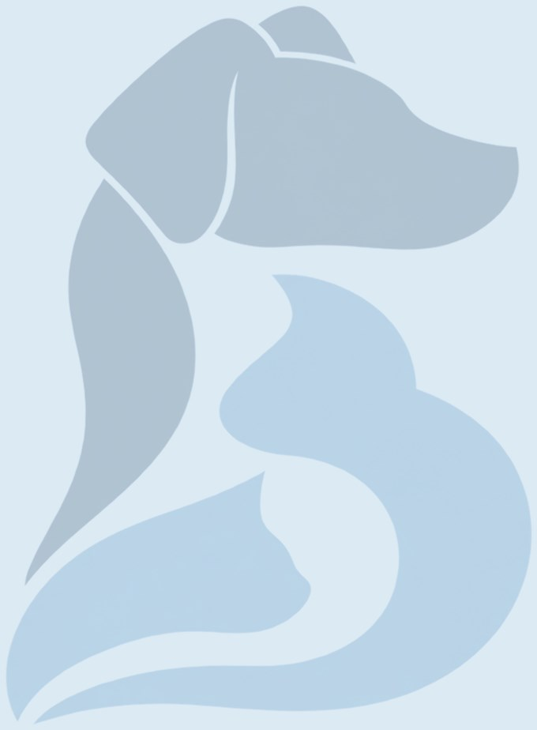

Цистотомия у кошек и собак
Вскрытие мочевого пузыря для удаления камней, полипов или взятия биопсии.

Коротко
- Длительность
- 45–75 минут
- Анестезия
- Общий наркоз
- Стационар
- В день операции или 1 сутки
- Швы
- Через 10–14 дней
- Восстановление
- 2 недели
Что это за операция
Камни в мочевом пузыре раздражают его стенку: появляются частые позывы, кровь в моче, мочеиспускание малыми порциями. У самцов мелкие камни могут застрять в уретре и полностью перекрыть отток мочи.
Некоторые камни (струвиты) растворяются специальным кормом. Другие (оксалаты, ураты и иные) не растворяются — их удаляют хирургически через небольшой разрез мочевого пузыря.
Когда нужна операция
- камни, которые нельзя растворить диетой (например, оксалаты)
- крупные камни, частые воспаления, риск закупорки уретры
- полипы и образования стенки мочевого пузыря
Варианты и цены
| Вариант | Цена |
|---|---|
| Кошка | 15 000 ₽ |
| Собака | 15 000 ₽ |
Цена операции указана без наркоза, анализов, стационара и препаратов. Точную смету врач называет после осмотра.
Обследование и подготовка
- Рентген и УЗИ: количество, размер и расположение камней
- Анализ и посев мочи
- Осмотр и сбор анамнеза: какие болезни были, какие лекарства принимает питомец
- Анализы крови, а по показаниям — УЗИ, рентген, ЭКГ
- Голод 8–12 часов перед наркозом; воду — по рекомендации врача
- Смета и план операции до её начала
Как проходит операция
- Наркоз, разрез по средней линии живота
- Вскрытие мочевого пузыря
- Удаление всех камней и промывание уретры
- Ушивание стенки пузыря
- Контрольный рентген и анализ состава камней
Восстановление по дням
Первые дни бывает кровь в моче и частые позывы — это нормально. Затем подбирают диету по составу камней.
- День операцииНаблюдение после наркоза, обезболивание, при необходимости — капельницы в стационаре.
- 1–3 суткиНачинаем кормить небольшими порциями. Домой — когда питомец ест, пьёт и хорошо себя чувствует.
- 3–7 деньДома: лёгкий корм, обезболивающие, контроль температуры, стула и мочеиспускания.
- 10–14 деньКонтрольный осмотр и снятие швов.
- 3–4 неделиПостепенное возвращение к обычной активности.
Сроки ориентировочные: врач скорректирует их по ходу восстановления.
Уход дома
- Воротник или послеоперационная попона — пока не снимут швы
- Обезболивающие и другие препараты — строго по схеме, не отменяйте их сами
- Каждый день осматривайте шов: в первые дни допустимы лёгкое покраснение и небольшой отёк
- В первые сутки кормите небольшими порциями
- Первые дни кровь в моче и частые позывы — норма
- Чаще выводите собаку на прогулку
- После анализа камней подберите диету и сдавайте мочу по графику
Возможные осложнения
Повторное образование камней без диеты и контроля, утечка мочи (редко).
Прогноз
Операция быстро избавляет от симптомов. Чтобы камни не образовывались снова, важно знать их состав и соблюдать диету.
Обсудим ваш случай
Пришлите анализы, снимки и заключения — посмотрю и отвечу, нужна ли операция и как к ней подготовиться.
Источники и дата проверки
Материал подготовлен по учебникам и клиническим руководствам по ветеринарной хирургии и проверен 22 октября 2026.
- Fossum T. W. (ред.). Small Animal Surgery. 5-е изд. Philadelphia: Elsevier, 2019.
- Johnston S. A., Tobias K. M. (ред.). Veterinary Surgery: Small Animal. 2-е изд. St. Louis: Elsevier, 2018.
- American College of Veterinary Surgeons. Small Animal Topics: https://www.acvs.org/small-animal/cystotomy/
- American College of Veterinary Surgeons. Small Animal Topics: https://www.acvs.org/small-animal/bladder-stones-small-animal/
Информация носит ознакомительный характер и не заменяет осмотр. Нужна ли операция и какая, решает врач после обследования.
Частые вопросы
Можно ли растворить камни кормом?
Струвиты — часто да. Оксалаты и многие другие камни растворить нельзя.
Сколько длится операция?
Обычно 45–75 минут. Точное время зависит от размера питомца и того, что хирург увидит во время операции.
Когда можно забрать питомца домой?
В день операции или 1 сутки. Домой отпускаем, когда питомец проснулся, стабилен и вы получили письменные рекомендации.
Когда снимают швы?
Через 10–14 дней. Если швы внутрикожные или рассасывающиеся, снимать их не нужно.